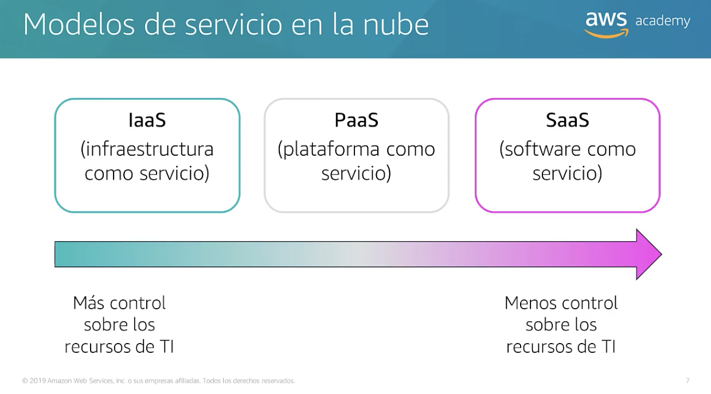
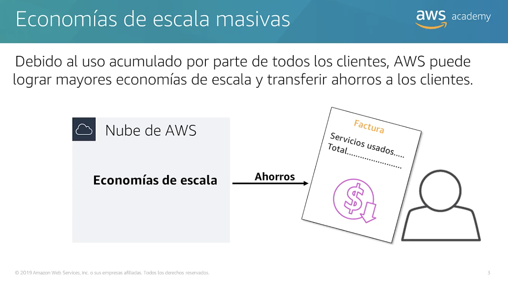
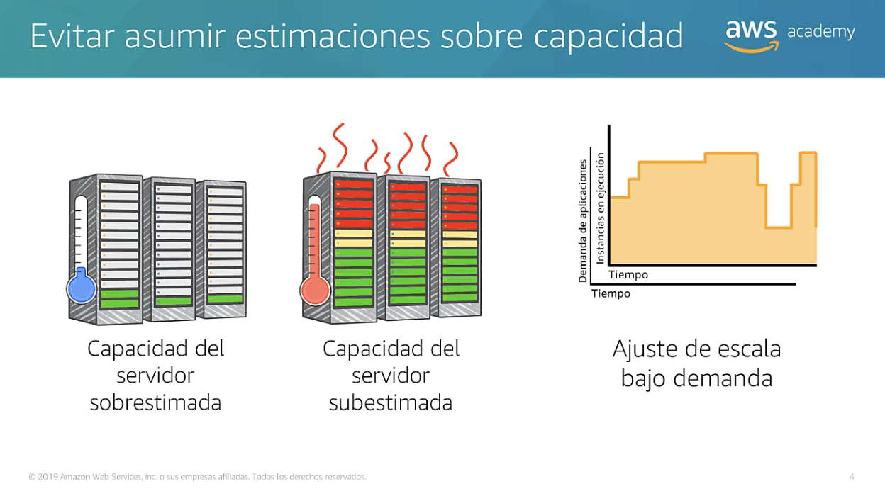

La computación en la nube permite acceder a recursos tecnológicos alojados en infraestructura remota.
Tres conceptos principales:
aprovisionamiento de recursos/servicios tecnológicos bajo un esquema bajo demanda
a través de una red (internet)
bajo un esquema pago por uso
Modelos de Servicio en la Nube:
IaaS: infraestructura como servicio: permite aprovisionar recursos tecnológicos, por ejemplo, un servidor virtual
PaaS: Plataforma como servicio, me otorga una plataforma de alguna solución tecnológica, por ejemplo me brinda herramientas como base de datos, API etc etc
SaaS: Software como servicio, por ejemplo el gmail, outlook, utilizado por usuarios finales

Modelos de Implementación.
Nube Pública: se despliega y yo puedo acceder a través de internet desde cualquier región geográfica
Nube Privada: (soberanía de los datos: hay políticas que los datos no salgan del país) se despliega y yo puedo acceder a través de INTRANET pero solo dentro de una región geográfica y de una empresa, un ejemplo AWS outposts
Nube Híbrida: mezcla de pública y privada dependiendo de los intereses del cliente
Nube Comunitaria: servidores, almacenamiento, aplicaciones y servicios— que son gestionados de manera conjunta por un grupo de usuarios con intereses alineados.
Ventajas:
CAPEX (Gasto de Capital - Capital Expenditure):
Inversión en la adquisición o mejora de activos de largo plazo para expandir el negocio.
Se registra en el balance general y su costo se deprecia o amortizar gradualmente en varios años.
OPEX (Gasto Operativo - Operational Expenditure):
Costos continuos y recurrentes del día a día necesarios para mantener la operación en marcha.
Se deduce por completo en el estado de resultados dentro del mismo período fiscal en que ocurre.
1. Cambiar gastos de capital por gastos variables
2. Economías de escala

3. Obtener recursos bajo demanda
Obtener recursos bajo demanda

4. Aumentar la velocidad y la agilidad
5. Reducir la operación y el mantenimiento de centros de datos
6. Adquirir escala mundial en minutos
Complemento — Curso AWS Academy (Módulos 1 y 3)
(Apuntes del curso oficial de AWS Academy que complementan los fundamentos de computación en la nube).
1. ¿Qué es un Servicio Web? (Módulo 1)
Es cualquier software disponible a través de Internet que se comunica mediante un formato estandarizado (como XML o JSON) para enviar solicitudes y recibir respuestas a través de una API (Interfaz de Programación de Aplicaciones).
2. Marco de Adopción de la Nube de AWS — AWS CAF (Módulo 1)
El AWS Cloud Adoption Framework (CAF) organiza la transición a la nube en 6 perspectivas divididas en dos bloques:
Bloque
Perspectiva
Enfoque principal
Capacidades empresariales
Negocio
Alinear la tecnología con las necesidades y objetivos del negocio.
Personas (Gente)
Formación técnica, cultura organizacional y dotación de personal.
Gobernanza
Controlar riesgos, costos y cumplimiento de objetivos empresariales.
Capacidades técnicas
Plataforma
Diseñar, entender y comunicar la arquitectura de los sistemas en la nube.
Seguridad
Cumplir los objetivos de confidencialidad, integridad y protección de datos.
Operaciones
Definir cómo se ejecuta, monitorea y mantiene el negocio día a día.
3. Infraestructura Global de AWS (Módulo 3)
(Complementa la ventaja 6: «Adquirir escala mundial en minutos»).
Región de AWS: Área geográfica física e independiente del mundo (ej. us-east-1).
Cada región contiene varias Zonas de Disponibilidad.
Se comunican entre sí mediante una red troncal privada de fibra óptica de AWS.
Importante: La replicación de datos entre regiones no es automática; la controla y configura el cliente según sus necesidades.
Zona de Disponibilidad (AZ — Availability Zone): Partición completamente aislada de la infraestructura dentro de una Región.
Está formada por uno o más centros de datos discretos interconectados con enlaces privados de alta velocidad y baja latencia.
Están diseñadas para aislar fallos: si una zona falla, las demás siguen operando.
Recomendación: Desplegar recursos y replicar datos en al menos dos Zonas de Disponibilidad para lograr alta resiliencia.
Centros de datos de AWS: Instalaciones físicas seguras donde se almacenan y procesan los datos. Cuentan con energía, refrigeración, redes y conectividad redundantes.
Ubicaciones de borde (Edge Locations) y Amazon CloudFront:
Amazon CloudFront: Red de entrega de contenido (CDN) que distribuye archivos, videos o páginas a usuarios finales con baja latencia.
Ubicaciones de borde: Cientos de puntos distribuidos en ciudades de todo el mundo (incluso en países donde no existe una Región de AWS) para guardar copias en caché cerca del usuario.
Cachés de borde regionales: Almacenan contenido de acceso menos frecuente para no tener que ir hasta el servidor de origen.
4. Características clave de la infraestructura en la nube (Módulo 3)
Elasticidad: Capacidad de aumentar o reducir automáticamente los recursos de forma dinámica según la demanda en tiempo real.
Escalabilidad: Capacidad de un sistema para admitir el crecimiento planificado sin perder rendimiento (agregando más servidores o potenciando los existentes).
Tolerancia a fallos (errores): Capacidad de seguir funcionando sin interrupción aunque falle uno de sus componentes internos, gracias a la redundancia integrada.
Alta disponibilidad: Garantía de que el sistema permanezca operativo y accesible (cerca del 24/7) con un tiempo de inactividad mínimo ante cualquier circunstancia.
EC2 (Amazon Elastic Compute Cloud): Servicio de computación en la nube que permite crear y administrar servidores virtuales (llamados instancias) bajo demanda con capacidad de cómputo escalable.
Nombre completo: Amazon Elastic Compute Cloud.
Función principal: Permite aprovisionar máquinas virtuales en minutos con la configuración que elijas de CPU, memoria RAM, almacenamiento y sistema operativo (Linux, Windows, etc.).
Elasticidad: Puedes aumentar o reducir la potencia y cantidad de servidores según el tráfico o la demanda de tu aplicación.
Modelo de cobro: Pago por uso (por segundo o por hora), convirtiendo los costos de infraestructura física (CAPEX) en gastos operativos variables (OPEX).
Los AMIs (Amazon Machine Image): son imágenes de máquina virtual preconfiguradas que incluyen el sistema operativo y el software necesario para lanzar instancias en la nube. Sirven como plantillas reutilizables para desplegar servidores idénticos de forma rápida y consistente.
Instancias: Son entornos virtuales o físicos donde se ejecutan las cargas de trabajo, definidos por la conformación de la familia (tipo de hardware) y el tamaño (capacidad de recursos).
La conformación determina cuántos recursos (CPU, memoria) se asignan según la familia y el tamaño elegido.
Familia: Define el tipo de procesador y la cantidad de memoria que tendrá la instancia, agrupando configuraciones según el caso de uso (cómputo, memoria, propósito general).
Cada familia ofrece perfiles específicos de CPU y RAM para optimizar rendimiento y costo.
Pares de claves: Son el mecanismo de autenticación basado en criptografía asimétrica, donde se crean una llave pública y una privada para acceder a las instancias.
La llave pública se instala en la instancia y la privada la guarda el usuario para autenticarse de forma segura sin contraseña.
GP e IO — aclaración: En el apartado de almacenamiento, gp2/gp3 e io1/io2 son tipos de volúmenes EBS, no familias de instancias EC2.
Los volúmenes de propósito general sirven para cargas variadas; los de IOPS aprovisionadas se orientan a cargas que requieren rendimiento de entrada/salida consistente.
Complemento — Curso AWS Academy (Módulo 2)
(Apuntes del curso oficial de AWS Academy que complementan el cobro y reserva de instancias EC2).
1. Cómo se cobra Amazon EC2 (Informática)
Por tiempo de ejecución: Se factura por hora o por segundo (según el sistema operativo), únicamente mientras la instancia está en estado activo (running).
Por tipo de instancia: El precio varía según la familia, cantidad de vCPU, memoria RAM y región seleccionada.
2. Modalidades de pago de Instancias Reservadas (1 o 3 años)
Al comprometerse a usar EC2 por 1 o 3 años, AWS ofrece importantes descuentos frente al pago bajo demanda (On-Demand). A mayor pago inicial, mayor es el descuento:
Sigla
Nombre completo
Cómo funciona
Nivel de descuento
AURI
All Upfront Reserved Instance (Pago inicial completo)
Se paga el 100 % de la reserva al inicio del contrato.
Se paga una parte por adelantado y el resto en cuotas mensuales.
Descuento intermedio
NURI
No Upfront Reserved Instance (Sin pago inicial)
$0 de pago inicial; todo se divide en cuotas mensuales durante el plazo.
Descuento menor (pero superior a bajo demanda)
Nota sobre el Panel de Amazon EC2: El panel de EC2 solo muestra el estado operativo actual de tus instancias, volúmenes y límites en esa región. No sirve para consultar historiales de facturación (para eso se utiliza AWS Cost Explorer).
VPC ID: Es el identificador único que AWS asigna a una Virtual Private Cloud, es decir, una red lógica aislada dentro de la nube donde despliegas tus recursos (servidores, bases de datos, etc.). Sirve para referenciar esa red específica en configuraciones, APIs y otros servicios.
Security Groups:
Son firewalls virtuales que controlan el tráfico de entrada y salida (se configuran) de tus instancias (como EC2), permitiendo solo los puertos, protocolos y orígenes que definen. Son stateful: si permites una conexión de entrada, la respuesta sale automáticamente sin regla adicional.
Regla de entrada (Inbound): Define qué tráfico externo puede llegar a tu instancia, indicando protocolo, puerto y origen; por ejemplo, SSH (TCP puerto 22) permite conectarte de forma remota a un servidor Linux, idealmente restringido a tu IP.
Regla de salida (Outbound): Define qué tráfico puede salir de tu instancia hacia otros destinos (internet, otras redes o servicios); por defecto en AWS permite todo el tráfico saliente. La regla de salida que se crea por defecto es la de internet
Ampliación de clase — 2026-11-12
Última actualización: 2026-11-17
Stateful y stateless
Control
Comportamiento
Tráfico de respuesta
Security Group
Stateful: sigue el estado de las conexiones.
La respuesta de una conexión permitida se autoriza automáticamente.
Network ACL
Stateless: evalúa entrada y salida por separado.
Deben permitirse ambos sentidos, incluidos los puertos de retorno necesarios.
Permitir NFS desde otro Security Group
En el grupo del destino de montaje EFS, permite entrada TCP 2049 con el grupo de EC2 como origen. En EC2, permite la salida correspondiente. La referencia al grupo evita enumerar individualmente las IP de las instancias asociadas; también deben cumplirse las rutas y los demás controles de red.
0.0.0.0/0 abarca todas las direcciones IPv4. Una regla así no crea por sí sola acceso desde Internet: también depende de la conectividad. En este taller, restringe SSH a tu IP y NFS al grupo de EC2.
Complemento — Curso AWS Academy (Módulo 4: Seguridad de red y datos)
(Apuntes del curso oficial de AWS Academy que complementan la seguridad de red y protección de aplicaciones. Para identidad, permisos IAM y gobernanza, consulta el tema 11. Seguridad, IAM y Gobernanza en AWS).
1. Ubicación de VPC y Security Groups en el Modelo de Responsabilidad Compartida
Responsabilidad del cliente (Seguridad «EN» la nube): Configurar correctamente los Security Groups, las reglas de firewall, las tablas de ruteo de la VPC, el sistema operativo y el cifrado de los datos.
Responsabilidad de AWS (Seguridad «DE» la nube): Proteger el cableado físico, los switches, routers físicos y los centros de datos donde corre la red virtual.
2. Cifrado de datos en tránsito: TLS, HTTP y HTTPS
(Resolución de la nota de investigación del Módulo 4 sobre datos que viajan por la red).
Datos en tránsito: Son todos los datos que se están moviendo activamente a través de una red (por ejemplo, entre el navegador de un cliente y tu instancia EC2, o entre una EC2 y Amazon EFS).
TLS (Transport Layer Security): Es el protocolo estándar abierto (sucesor de SSL) que cifra la comunicación en red extremo a extremo para que nadie pueda interceptar ni alterar la información en el camino. (En el taller 09 lo usamos al montar EFS con -o tls).
HTTP vs. HTTPS:
HTTP (Hypertext Transfer Protocol — Puerto TCP 80): Envía la información en texto plano sin cifrar; cualquiera que intercepte la red puede leer contraseñas o datos.
HTTPS (HTTP Secure — Puerto TCP 443): Es exactamente HTTP pero protegido por una capa de TLS. Cifra todo el tráfico entre el usuario y el servidor y verifica la identidad del sitio mediante certificados digitales.
3. AWS Shield (Protección de red contra ataques DDoS)
¿Qué es? Servicio administrado de protección contra ataques de Denegación de Servicio Distribuido (DDoS)(corregido de «DDoD» en el apunte original).
Cómo funciona: Monitorea el tráfico de red de forma permanente y aplica mitigaciones automáticas e inmediatas para evitar que tráfico malicioso sature tus servidores, minimizando la latencia y el tiempo de inactividad.
Niveles:AWS Shield Standard (gratuito y activo por defecto en todas las cuentas) y AWS Shield Advanced (protección avanzada de pago).
Las “instrucciones” son comandos automáticos (bash o cloud-config) como instalar paquetes, crear usuarios o levantar servicios, para que la instancia se configure sola.
cloud-init.log (/var/log/cloud-init.log): Registro detallado de los eventos internos de cloud-init, el servicio que ejecuta la configuración inicial de la instancia; sirve para diagnosticar qué etapas se ejecutaron y cuáles fallaron.
cloud-init-output.log (/var/log/cloud-init-output.log): Captura la salida estándar y los errores de los comandos de tu script de User Data; es el primero que se revisa para depurar fallos del script.
Mecanismos de acceso e interacción con AWS (o Herramientas de gestión e interfaces de AWS)
AWS Web (Consola de administración): Interfaz gráfica accesible desde cualquier navegador para configurar y supervisar tus recursos visualmente. Es ideal para tareas exploratorias, monitoreo en tiempo real y administraciones manuales sin tocar la terminal.
AWS CLI por consola: Herramienta que permite interactuar con los servicios de AWS ejecutando comandos directos en la terminal. Permite automatizar despliegues por medio de scripts y ejecutar operaciones repetitivas con rapidez.
--image-id: Sistema operativo que usará el servidor (ID de la AMI).
--instance-type: Capacidad de hardware (CPU y RAM, ej. t3.micro).
--key-name: Nombre de tu clave SSH registrada en AWS (sin extensión .pem).
--count: Número de servidores que se van a crear.
SDK (Software Development Kit): Conjunto de librerías para lenguajes específicos (Python, Node.js, Java) que integra AWS dentro de tus programas. Facilita que tus aplicaciones se conecten, envíen datos o controlen la infraestructura desde su propio código.
Complemento — Curso AWS Academy (Módulos 1 y 4)
(Apuntes del curso oficial de AWS Academy que complementan los mecanismos de acceso e interacción).
Tipos de credenciales y acceso para un usuario IAM (Módulo 4)
Cuando se crea un usuario en AWS IAM, se le pueden habilitar dos formas de acceso independientes, cada una con sus propias credenciales:
Tipo de acceso
Herramientas que habilita
Credenciales requeridas
Acceso a la Consola de Administración
Navegador web (interfaz gráfica de AWS).
1. ID de cuenta (12 dígitos) o alias. 2. Nombre de usuario IAM. 3. Contraseña IAM. 4. (Recomendado) Código MFA (autenticación multifactor).
Acceso mediante programación
AWS CLI, AWS SDK y llamadas directas a la API (en formato XML/JSON).
1. ID de clave de acceso (Access Key ID). 2. Clave de acceso secreta (Secret Access Key). (Nota: en el apunte original figuraba como «clave remota», su nombre oficial es Secret Access Key).
Es una herramienta de codigo abierto, IasCodigo permite definir crear, actualizar o eliminar (CRUD) mediante archivos de configuración, el archivo principal de terraform se llama main, su archivos extension .tf, permite automatizar, de manera declarativa intensiones no el paso a paso
Persistente: Es un almacenamiento que perdura en el tiempo
Storage EC2:
Amazon EBS (Elastic Block Store), servicio de almacenamiento persistente por bloques independientes que trabajan en conjunto
gp3 o gp2 (propósito general; gp3 corresponde a la tercera generación): se usa para cualquier cosa, para ámbitos generales
io1 e io2 (input-output de primera o segunda generación): tipos de volúmenes de alto rendimiento por ejemplo para instalar recursos como base de datos ejemplo un CRUD, optimizada para la escritura y lectura
Amazon EFS (Elastic File System), servicio administrado, permite varias instancias almacenen de manera compartida sobre este sistema de almacenamiento de red a través del protocolo NFS.
NFS (Network File System o Sistema de Archivos de Red) es un protocolo distribuido de nivel de aplicación basado en la arquitectura cliente-servidor, que permite a un equipo acceder, leer y escribir archivos y directorios remotos a través de una red IP como si estuvieran almacenados en su propio disco local.
Network es un punto de acceso a cada una de las zonas de disponibilidad
No Persistente: (Efímero) es volátil mientras el proceso está en ejecución existe y si se termina también se termina o borra ese almacenamiento
Recuerda tenemos que montar un disco cuando colocamos un nuevo disco en el servidor
Ampliación de clase — 2026-11-12
Última actualización: 2026-11-17
EBS frente a EFS
Aspecto
EBS
EFS
Tipo
Almacenamiento en bloques.
Sistema de archivos compartido.
Uso en el taller
Volumen de 10 GiB de la instancia 1, montado en /disco2.
Mismo sistema de archivos montado en /efs1 de las dos instancias.
Preparación
Identificar el volumen; formatear solo si está vacío y sin sistema de archivos.
Instalar amazon-efs-utils y montar por red con TLS.
Acceso
Volumen dedicado en este ejercicio; Multi-Attach es una opción específica de io1/io2.
Varios clientes acceden a los mismos archivos mediante NFS.
NFS y archivos compartidos
NFS permite montar un sistema de archivos remoto como un directorio local. Para EFS, la conectividad NFS utiliza TCP 2049. Leer desde la segunda instancia el archivo escrito en la primera verifica acceso al mismo almacenamiento, no una copia sincronizada entre discos.
Elasticidad y disponibilidad
EFS administra la infraestructura y ajusta el almacenamiento a los archivos guardados. La facturación puede incluir otros componentes además de capacidad. EFS Regional guarda datos en varias zonas de disponibilidad; EFS One Zone usa una sola. No todos los sistemas EFS tienen la misma distribución entre zonas.
(Apuntes del curso oficial de AWS Academy que complementan los conceptos de almacenamiento).
1. ¿Qué es un Bucket de Amazon S3? (Resolución de consulta — Módulo 4)
Amazon S3 (Simple Storage Service): Servicio de almacenamiento de objetos de AWS (a diferencia de EBS que guarda bloques y EFS que guarda archivos en red NFS). Sirve para guardar cualquier tipo de archivo (imágenes, copias de seguridad, logs, videos) desde cualquier lugar por Internet.
Bucket («cubeta» o contenedor): Es la carpeta raíz o contenedor principal donde guardas tus archivos (objetos) dentro de Amazon S3.
Cada bucket tiene un nombre único a nivel mundial (ej. mis-apuntes-cloud-2026).
Por defecto es totalmente privado, pero permite adjuntarle directamente una política basada en recursos (Bucket Policy) para definir quién puede leer o subir archivos en él.
2. Cifrado de datos en reposo (Módulo 4)
Datos en reposo: Son los datos almacenados físicamente en un medio persistente (como un volumen EBS, un sistema EFS o un bucket de S3).
Cómo se protegen: El cifrado codifica los datos con una clave secreta (administrada mediante AWS KMS) para que sean ilegibles en disco; solo quien posea permisos sobre esa clave puede descifrarlos y leerlos.
3. Modelo de cobro del almacenamiento (Módulo 2)
En AWS el almacenamiento se factura principalmente por GB almacenado al mes (según el tipo de disco o clase de almacenamiento), más posibles cargos por solicitudes o transferencia de datos hacia fuera de la región.
Antes de formatear, identifica el dispositivo correcto con lsblk -f. El comando mkfs elimina datos del volumen seleccionado. Los nombres de dispositivo pueden variar entre instancias.
Para qué sirve: Inicia una sesión remota segura por SSH hacia la instancia utilizando tu archivo de llave privada (.pem).
2. Inspección de discos disponibles
Listar dispositivos de bloque y tamaños
lsblk
Para qué sirve: Muestra los discos y particiones conectados al servidor con su tamaño (20G en xvda y 10G en xvdb), tipo y punto de montaje.
Verificar sistemas de archivos y UUID
lsblk -f
Para qué sirve: Lista los dispositivos junto con su tipo de sistema de archivos (FSTYPE), identificador UUID y espacio disponible. Permite comprobar que el disco nuevo (xvdb) está vacío y sin formato.
Consultar metadatos del nuevo disco
sudo blkid /dev/sdb
Para qué sirve: Consulta el UUID y formato del disco /dev/sdb. Al estar recién creado, no devuelve información.
3. Formateo y montaje del nuevo volumen
Crear el directorio de montaje
sudo mkdir -p /disco2
Para qué sirve: Crea la carpeta /disco2 con permisos de administrador, la cual funcionará como punto de montaje para acceder al disco.
Formatear el volumen con sistema de archivos XFS
sudo mkfs -t xfs /dev/sdb
Para qué sirve: Formatea el disco /dev/sdb asignándole el sistema de archivos XFS(sin este paso previo, mount arroja error de superbloque/formato inválido).
Montar el disco en el sistema
sudo mount /dev/sdb /disco2
Para qué sirve: Vincula el disco ya formateado dentro de /disco2 para que el sistema operativo pueda leer y escribir en él.
4. Verificación y prueba de escritura
Comprobar espacio disponible y tipo de formato
df -hT
Para qué sirve: Muestra el espacio libre y usado de todos los discos en formato legible (GB/MB) junto con su sistema de archivos (xfs), confirmando que /disco2 está activo (reemplaza a df y corrige el error de escritura df -ht).
Crear un archivo de prueba en el volumen
echo "texto de prueba" | sudo tee /disco2/prueba.txt
Para qué sirve: Crea el archivo prueba.txt dentro del nuevo disco con permisos de administrador y escribe una línea de texto para validar la escritura.
Leer el archivo creado
cat /disco2/prueba.txt
Para qué sirve: Muestra en pantalla el contenido de prueba.txt para confirmar que los datos se guardaron correctamente.
Verificación final de montaje y formato
lsblk -f
Para qué sirve: Comprueba que xvdb ya cuenta con formato xfs, un UUID propio asignado y punto de montaje activo en /disco2.
Aprovisionar y configurar almacenamiento en bloque dedicado (Amazon EBS) y almacenamiento de archivos en red compartido (Amazon EFS) sobre instancias Amazon Linux 2023, aplicando reglas de seguridad mediante Security Groups y validando el acceso a los mismos archivos desde dos servidores EC2.
2. Conceptos Clave
Amazon EBS (Elastic Block Store): Almacenamiento en bloques. En este taller se utiliza un volumen dedicado a la primera instancia. Solo se formatea si es nuevo y no contiene un sistema de archivos; existen configuraciones Multi-Attach para determinados volúmenes io1/io2.
Amazon EFS (Elastic File System): Sistema de archivos en red administrado basado en el protocolo NFSv4 (puerto TCP 2049). Permite que múltiples instancias EC2 lean y escriban los mismos archivos al mismo tiempo y crece automáticamente.
Security Group (Stateful): Firewall virtual con memoria (si permite entrar tráfico, deja salir la respuesta). Por seguridad, el EFS no se abre al mundo (0.0.0.0/0), sino únicamente al Security Group de las instancias EC2.
3. Fase 1: Configuración en la Consola Web de AWS
A. Configurar los Security Groups (VPC / EC2)
Security Group para las instancias EC2 (sg-ec2):
Regla de entrada: Puerto 22 (SSH) desde tu IP pública actual (/32) para conectarte por terminal.
Security Group para el EFS (sge-efs-ae):
Regla de entrada: Tipo NFS (Puerto TCP 2049) poniendo como Origen el ID del Security Group de tus EC2 (sg-ec2).
B. Lanzar las dos instancias EC2 (Amazon Linux 2023)
Instancia 1 (Principal):
Seleccionar Amazon Linux 2023, tipo t3.micro y tu par de claves (.pem).
En Configuración de red, elegir la VPC por defecto y asignar sg-ec2.
En Configurar almacenamiento, mantener el disco raíz (8 GiB) y hacer clic en Agregar nuevo volumen para añadir un disco EBS de 10 GiB.
Instancia 2 (Secundaria):
Lanzar una segunda instancia Amazon Linux 2023 en la misma VPC, con el mismo Security Group (sg-ec2) y la misma llave .pem.
C. Crear el Sistema de Archivos EFS
Ir al servicio Amazon EFS en la consola de AWS y hacer clic en Crear sistema de archivos.
Asignar un nombre, seleccionar la misma VPC de las instancias EC2 y hacer clic en Personalizar.
En el paso de Acceso a la red, reemplazar el Security Group por defecto de cada Zona de Disponibilidad por el grupo sge-efs-ae (puerto 2049 abierto).
Finalizar la creación y copiar el ID del sistema de archivos (ejemplo: fs-02d737f8f33137fd6).
Requisitos de red: verifica que existan destinos de montaje EFS disponibles en las zonas usadas por las instancias, que DNS funcione y que las reglas de salida de EC2 permitan TCP 2049 hacia EFS.
4. Fase 2: Formatear y Montar el Disco EBS (10 GB) en Instancia 1
Conéctate por SSH a la Instancia 1 y ejecuta los siguientes comandos:
Identificar el nombre del disco nuevo de 10 GB:
lsblk
lsblk -f
Nota: En instancias t3, los volúmenes se presentan como dispositivos NVMe. /dev/nvme1n1 es solo el nombre del ejemplo: confirma el dispositivo y su tamaño con lsblk y el sistema de archivos con lsblk -f antes de continuar.
Crear la carpeta que servirá como punto de montaje:
sudo mkdir -p /disco2
Formatear únicamente el volumen nuevo y vacío con XFS:
mkfs puede destruir los datos existentes. No lo ejecutes sobre el disco raíz ni sobre un volumen que ya contenga datos. Sustituye el dispositivo del ejemplo por el que hayas identificado.
sudo mkfs -t xfs /dev/nvme1n1
Importante: Un volumen nuevo sin sistema de archivos necesita formateo para este uso. Uno restaurado desde una instantánea puede estar ya formateado: no lo vuelvas a formatear.
Montar el disco en la carpeta /disco2:
sudo mount /dev/nvme1n1 /disco2
Comprobar el montaje y realizar prueba de escritura:
df -hT
echo "texto de prueba" | sudo tee /disco2/prueba.txt
cat /disco2/prueba.txt
5. Fase 3: Instalar y Montar Amazon EFS en Instancia 1
En la misma terminal SSH de la Instancia 1:
Instalar la librería oficial de utilidades EFS y crear la carpeta /efs1:
Listar y leer el archivo creado desde la Instancia 1:
ls -la /efs1
cat /efs1/prueba.txt
Escribir desde la Instancia 2 para validar lectura y escritura compartidas:
echo "Hola desde la segunda instancia" | sudo tee -a /efs1/prueba.txt
cat /efs1/prueba.txt
Al ejecutar cat /efs1/prueba.txt nuevamente en la Instancia 1, deben verse ambas líneas tras completar la escritura. Se accede al mismo sistema de archivos; no se sincronizan dos discos locales.
7. Resumen de Comandos Útiles de Verificación
Comando
Función
lsblk -f
Lista discos conectados, formato (xfs), UUID y puntos de montaje.
df -hT
Muestra el espacio usado/disponible en GB/MB y el tipo de sistema (xfs, nfs4).
ls -la /efs1
Lista todos los archivos (incluidos ocultos) y permisos dentro del EFS.
cat /efs1/prueba.txt
Muestra en pantalla el contenido del archivo de texto.
8. Alcance del taller
Los comandos realizan montajes manuales. Para volver a montar automáticamente después de un reinicio se requiere una configuración adicional, como /etc/fstab. Un montaje manual no implica que los datos almacenados se borren al reiniciar.
La filosofía principal de AWS es pagar solo por lo que se utiliza, sin contratos obligatorios a largo plazo. Los tres impulsores de costo principales son:
Informática (Cómputo): Se cobra por hora o por segundo de ejecución y varía según el tipo y familia de instancia (vCPU y RAM).
Almacenamiento: Se cobra normalmente por GB almacenado al mes.
Transferencia de datos:
Datos de entrada (desde Internet hacia AWS): Generalmente gratuitos.
Datos de salida (desde AWS hacia Internet o hacia otra Región):Se cobran por GB (de forma agregada).
Dentro de la misma Zona de Disponibilidad (con IP privada): Suele ser gratuito.
2. Filosofía de precios y Economías de Escala
(Resolución de la nota de investigación: «¿Cómo funciona "pagar menos si usa más" y cómo se relaciona con Economías de escala?»).
Paga menos cuando usas más (Descuentos por volumen): En servicios de almacenamiento (como Amazon S3) o transferencia de datos, AWS aplica precios escalonados por niveles (tiers). Cuantos más GB consumas al mes, más barato te cuesta cada GB adicional.
Paga menos cuando reservas: Si comprometes capacidad por 1 o 3 años (AURI, PURI, NURI en EC2 o RDS), obtienes hasta un 72 % de descuento frente al pago bajo demanda.
Relación con las Economías de Escala (Paga aún menos a medida que AWS crece): Como AWS agrupa el consumo de millones de clientes en todo el mundo, compra hardware, energía y ancho de banda a costos unitarios mucho más bajos que cualquier empresa individual. AWS traslada ese ahorro reduciendo periódicamente los precios de sus servicios para todos los clientes.
3. Costo Total de Propiedad (TCO) y Calculadora de Precios
Costo Total de Propiedad (TCO — Total Cost of Ownership): Estimación financiera que identifica tanto los costos directos (servidores, licencias) como los costos indirectos (electricidad, refrigeración, espacio físico, personal de mantenimiento) de mantener un sistema local frente a llevarlo a la nube. Es útil para comparar infraestructura on-premises contra AWS, presupuestar cargas de trabajo y armar un caso de negocio.
Calculadora de precios de AWS (AWS Pricing Calculator): Herramienta web gratuita que permite crear estimaciones detalladas del costo mensual de arquitecturas y casos prácticos antes de desplegarlos en AWS.
4. Servicios sin costo adicional vs. recursos que sí cobran
Servicios gratuitos (sin costo adicional)
Qué sí genera cobro al usarlos
Amazon VPC (Red virtual privada)
Componentes opcionales como NAT Gateway o VPN.
AWS IAM (Identidades y accesos)
Totalmente gratuito.
Facturación consolidada (Consolidated Billing)
El consumo real de cada cuenta miembro.
AWS Auto Scaling, AWS CloudFormation, AWS Elastic Beanstalk, AWS OpsWorks
Las instancias Amazon EC2, volúmenes Amazon EBS, balanceadores o bases de datos Amazon RDS que estas herramientas aprovisionen automáticamente.
5. Herramientas de monitoreo de costos vs. estado operativo
Herramienta
Función principal
¿Muestra historial financiero de facturación?
AWS Cost Explorer (Explorador de costos)
Visualizar, analizar y proyectar los costos y el consumo de AWS a lo largo del tiempo mediante gráficos y filtros.
Sí (es la herramienta oficial de análisis de costos).
Panel de Amazon EC2
Muestra el estado operativo actual de las instancias, volúmenes y límites de la región.
No.
AWS Trusted Advisor
Inspecciona tu cuenta y da recomendaciones automáticas en 5 categorías: optimización de costos, seguridad, tolerancia a fallos, rendimiento y cuotas de servicio.
No (da consejos de ahorro, no historial de facturas).
AWS CloudTrail (en S3)
Registra quién hizo qué llamada a la API y cuándo para auditoría de seguridad.
No.
6. Planes de Soporte de AWS (AWS Support)
Plan
Para quién está pensado
Cobertura y canales
AWS Trusted Advisor
Tiempo de respuesta crítico y TAM
1. Basic
Todas las cuentas (incluido gratis por defecto).
Atención 24/7 solo para facturación y cuenta; foros y documentación. (Sin soporte técnico).
Solo comprobaciones básicas.
Sin SLA técnico. No incluye TAM.
2. Developer
Entornos de prueba y desarrollo.
Soporte técnico por correo electrónico en horario laboral.
Solo comprobaciones básicas.
< 24 h / < 12 h según gravedad. No incluye TAM.
3. Business
Entornos de producción.
Soporte técnico 24/7 por teléfono, chat y correo.
Acceso completo a todas las comprobaciones.
< 1 hora si un sistema de producción cae. No incluye TAM.
4. Enterprise
Cargas de trabajo de misión crítica.
Soporte 24/7 completo + Conserjería de facturación.
Acceso completo a todas las comprobaciones.
< 15 minutos ante caída crítica. Incluye un TAM (Administrador Técnico de Cuentas dedicado).
11. Seguridad, IAM y Gobernanza en AWS (Curso AWS — Módulos 2 y 4)
- Datos del cliente y su cifrado (en reposo y en tránsito). - Aplicaciones, gestión de usuarios y permisos (IAM). - Configuración del Sistema Operativo, parches y actualizaciones (ej. en EC2). - Configuración de red y firewalls (Security Groups, Network ACLs).
AWS
Seguridad «DE» la nube (De la infraestructura base)
- Hardware físico: servidores, discos, cables y mantenimiento físico. - Infraestructura global: Regiones, Zonas de Disponibilidad, Centros de datos y Ubicaciones de borde. - Capa de software de virtualización subyacente (Cómputo, Almacenamiento, Bases de datos y Redes físicas).
2. AWS Identity and Access Management (IAM)
Definición: Servicio gratuito que permite administrar de forma segura el acceso a los servicios y recursos de AWS.
Recurso: Cualquier objeto o entidad dentro de una cuenta con el que se puede trabajar (ej. una instancia EC2, un bucket de S3 o un volumen EBS).
¿Qué controla IAM?Quién puede acceder (Autenticación), a qué recursos y qué acciones puede realizar (Autorización), y cómo obtiene acceso (Consola web o Programación CLI/SDK).
A. Componentes principales de IAM
Usuario de IAM (Persona o aplicación): Identidad permanente que representa a una persona o servicio. Por defecto comienza sin ningún permiso.
Grupo de IAM: Colección de usuarios de IAM que comparten los mismos permisos (ej. Desarrolladores). Un usuario puede estar en varios grupos; no hay grupo predeterminado y los grupos no pueden anidarse.
Rol de IAM: Identidad con permisos específicos que no pertenece a una sola persona ni usa contraseñas permanentes. Lo asume temporalmente un usuario, aplicación o servicio de AWS (ej. una instancia EC2) y entrega credenciales temporales.
Política de IAM: Documento JSON que define explícitamente qué acciones están permitidas (Allow) o denegadas (Deny) sobre qué recursos.
B. Aclaración de consultas sobre Políticas, Entidades y Permisos
¿Qué es una «Entidad» en IAM? Son los objetos de identidad de IAM a los que puedes adjuntar una política: un Usuario de IAM, un Grupo de IAM o un Rol de IAM.
Políticas basadas en identidad vs. basadas en recursos:
Basadas en identidad: Se adjuntan a un Usuario, Grupo o Rol (dicen qué puede hacer esa identidad).
Basadas en recursos: Se adjuntan directamente al recurso, como una Bucket Policy en un bucket de Amazon S3 (dicen a quién deja entrar ese recurso).
Evaluación de permisos (Implícito vs. Explícito):
Denegación implícita (por defecto): Todo está denegado inicialmente si no hay una política que lo autorice.
Autorización explícita (Allow): Concede el permiso si no existe ningún Deny.
Denegación explícita (Deny): Prohíbe expresamente la acción y SIEMPRE gana sobre cualquier Allow.
Práctica recomendada: Aplicar siempre el Principio de mínimo privilegio.
C. Corrección del flujo jerárquico y Diagrama de IAM
Corrección clave sobre tu nota original: En AWS un Grupo NO se asocia directamente a un Rol. Las Políticas JSON se adjuntan directamente al Grupo (para equipos de personas) O se adjuntan a un Rol (para servicios como EC2 o accesos temporales):
Ruta 2A (Para personas): 1. Crear Política → 2. Crear Grupo y adjuntarle la Política → 3. Crear Usuario y agregarlo al Grupo.
Ruta 2B (Para servicios o acceso temporal): 1. Crear Política → 2. Crear Rol y adjuntarle la Política → 3. El servicio (ej. EC2) o usuario asume el Rol con credenciales temporales.
D. Usuario Raíz (Root User) y MFA
Prácticas recomendadas al abrir la cuenta: No usar el usuario raíz para tareas diarias, eliminar sus claves de acceso programáticas (Access Key ID y Secret Access Key), activar MFA y crear un usuario administrador en IAM.
Tareas exclusivas del Usuario Raíz: Cambiar o cancelar el plan de soporte de AWS, modificar datos principales de la cuenta (correo, nombre), cerrar la cuenta de AWS o restaurar permisos de un administrador IAM.
3. AWS Organizations y Políticas de Control de Servicios (SCP)
AWS Organizations: Permite consolidar varias cuentas de AWS y administrarlas de forma centralizada mediante Unidades Organizativas (OU), facturación consolidada y creación automatizada de cuentas por API.
Los 4 pasos para configurar AWS Organizations:
Crear la organización e invitar o crear las cuentas miembro.
Crear las Unidades Organizativas (OU) para agrupar cuentas.
Crear las Políticas de Control de Servicios (SCP) en JSON.
Adjuntar y probar las SCP en las OU o cuentas.
Políticas de Control de Servicios (SCP): Establecen el límite máximo de permisos para las cuentas de una organización. Tienen sintaxis similar a IAM, pero NO conceden permisos por sí solas (solo fijan el tope de lo que IAM puede autorizar en cada cuenta).
4. Servicios de Cifrado, Autenticación, Auditoría y Conformidad
Servicio / Concepto
Función clave en AWS (Módulo 4)
AWS KMS (Key Management Service)
Crea y administra claves de cifrado para datos en reposo. Usa módulos de seguridad de hardware (HSM) bajo el estándar FIPS 140-2 y se integra con CloudTrail.
Amazon Cognito
Agrega control de acceso, registro e inicio de sesión a aplicaciones web y móviles. Escala a millones de usuarios y admite proveedores como Google, Facebook, Amazon y Microsoft Active Directory.
AWS Shield
Protección administrada contra ataques DDoS con detección continua y mitigación automática.
AWS CloudTrail
Registra y audita todas las llamadas a la API y actividad de usuarios en la cuenta (los logs pueden guardarse en Amazon S3).
AWS Config
Evalúa, audita y monitorea el historial y cambios de configuración de los recursos de AWS comparándolos contra las configuraciones deseadas.
AWS Artifact
Portal autoservicio para descargar informes de seguridad, certificaciones (ISO, SOC, PCI) y conformidad de AWS.
Programas de Conformidad
Se clasifican en: 1. Certificaciones y acreditaciones, 2. Leyes, regulaciones y privacidad, y 3. Alineaciones y marcos de trabajo.